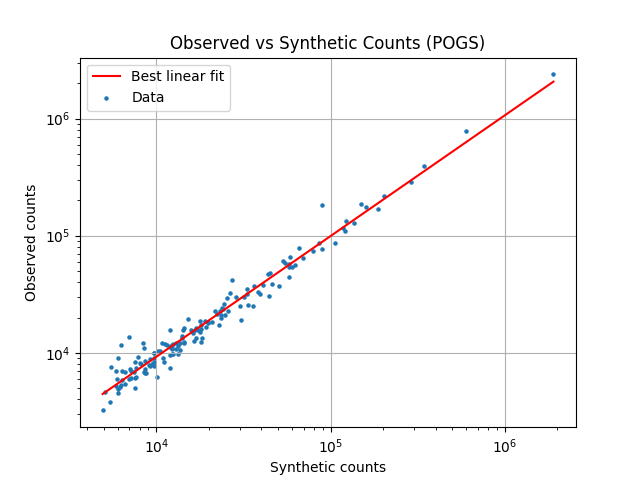
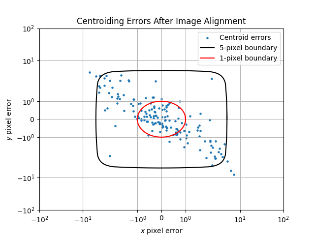
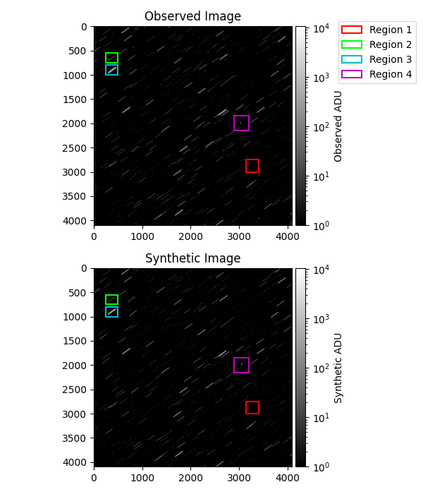
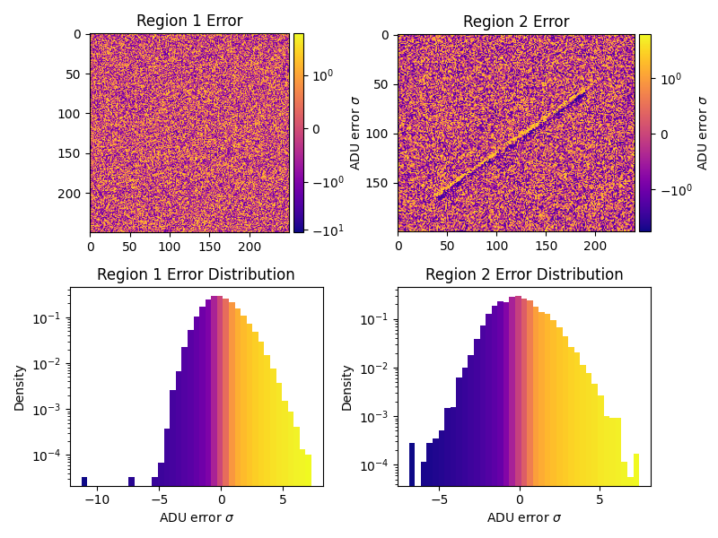
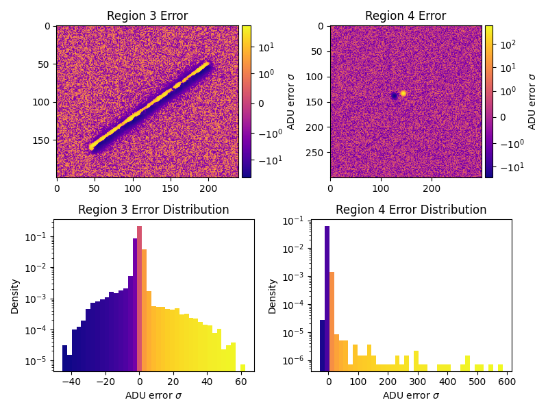

Note
Go to the end to download the full example code.
Synthetic Image Results#
Comparison plots for the synthetic and real images
from types import SimpleNamespace
import matplotlib.pyplot as plt
import numpy as np
from matplotlib import colormaps as cm
from matplotlib import patches
from matplotlib.colors import SymLogNorm
import mirage as mr
import mirage.photo as mrp
import mirage.vis as mrv
np.random.seed(2)
info_path = '/Users/liamrobinson/Library/CloudStorage/OneDrive-purdue.edu/pogs/2022/2022-09-18/ObservationData.mat'
add_distortion = True
add_refraction = True
station = mr.Station()
station.telescope.fwhm = 3
station.telescope.gain = 5.1
mr.tic('Loading star catalog')
catalog = mr.GaiaSpectralStarCatalog(station, mr.now())
mr.toc()
r1 = [(3000, 2750), (3150, 3400)] # br
r2 = [(750, 550), (250, 490)] # dim star
r3 = [(1000, 800), (250, 490)] # bright star
r4 = [(2150, 1850), (2900, 3200)] # obj
regions = [(r1, 'r'), (r2, 'lime'), (r3, 'c'), (r4, 'm')]
res = mr.generate_matched_image(
info_path,
200,
station,
catalog,
add_distortion,
add_refraction,
bias_variance_adu=175,
noise=True,
)
n = SimpleNamespace(**res)
img_syn_prepared = np.log10(np.clip(n.img_syn, 1, np.inf))
plt.figure()
plt.plot(n.counts_syn, n.fit_counts_obs_of_syn(n.counts_syn), c='r', markersize=7)
plt.scatter(n.counts_syn, n.counts_obs, s=5)
plt.xlabel('Synthetic counts')
plt.ylabel('Observed counts')
plt.grid()
plt.xscale('log')
plt.yscale('log')
plt.legend(['Best linear fit', 'Data'])
plt.title('Observed vs Synthetic Counts (POGS)')
# plt.show()
# endd

Loading star catalog: 1.27e+00 seconds
Applying 1.14e-02 deg of refraction
fits_info["integration_time"]=4.0
sim counts are too high by a factor of 1.06
BEFORE QUEST: median error 84.77 pixels
Performing the QUEST fit with 158 stars
Applying a 1.96e-02 degree rotation to the telescope orientation
AFTER QUEST: median error 1.14 pixels
Objects in frame 1:
NAVSTAR 80 (USA 309)
Synthesizing CCD Image: 1.87e+00 seconds
Text(0.5, 1.0, 'Observed vs Synthetic Counts (POGS)')
Overlaying the two images
# Background subtraction
n.img, br_map, br_mask_img, br_std_img = mrp.background_subtract(
n.img, reduction_factor=2
)
n.img_syn, br_map, br_mask_syn, br_std_synth = mrp.background_subtract(
n.img_syn, reduction_factor=2
)
br_mask = br_mask_img | br_mask_syn
print(f'Standard deviation of the background (observed): {br_std_img:.2f}')
print(f'Standard deviation of the background (synthetic): {br_std_synth:.2f}')
plt.figure()
plt.scatter(n.err_updated[:, 0], n.err_updated[:, 1], s=5)
plt.yscale('symlog')
plt.xscale('symlog')
t = np.linspace(0, 2 * np.pi + 0.1, 1000)
plt.plot(5 * np.cos(t), 5 * np.sin(t), c='k')
plt.plot(1 * np.cos(t), 1 * np.sin(t), c='r')
plt.legend(
['Centroid errors', '5-pixel boundary', '1-pixel boundary'], loc='upper right'
)
plt.ylim(-100, 100)
plt.xlim(-100, 100)
plt.xlabel('$x$ pixel error')
plt.ylabel('$y$ pixel error')
plt.title('Centroiding Errors After Image Alignment')
plt.grid()
clim = [1.0, np.max([np.max(n.img), np.max(n.img_syn)])]
fig, ax = plt.subplots(nrows=2, ncols=1, figsize=(6, 7))
plt.subplot(2, 1, 1)
mrp.plot_fits(n.img)
plt.title('Observed Image')
plt.clim(*clim)
plt.colorbar(label='Observed ADU', cax=mrv.get_cbar_ax())
for i, (r, c) in enumerate(regions, 1):
w, h = r[1][1] - r[1][0], r[0][0] - r[0][1]
for a in ax.reshape(-1):
rect1 = patches.Rectangle(
[np.mean(r[1]) - w / 2, np.mean(r[0]) - h / 2],
w,
h,
edgecolor=c,
fill=False,
lw=1.5,
label=f'Region {i}',
)
a.add_patch(rect1)
plt.legend(bbox_to_anchor=(1.65, 1.05))
plt.subplot(2, 1, 2)
mrp.plot_fits(n.img_syn)
plt.title('Synthetic Image')
plt.clim(*clim)
plt.colorbar(label='Synthetic ADU', cax=mrv.get_cbar_ax())
plt.tight_layout()
# plt.show()


Standard deviation of the background (observed): 10.39
Standard deviation of the background (synthetic): 8.65
Subtracting the two images
n_bins = 40
cm = cm.get_cmap('plasma')
adu_err = n.img_syn - n.img
stdev = np.clip(np.sqrt(np.abs(n.img)), br_std_img, np.inf)
adu_sigma_br = adu_err / stdev
def plot_regions_error(rs, start):
fig, ax = plt.subplots(figsize=(8, 6), ncols=2, nrows=2)
allocations = [[[0, 0], [1, 0]], [[0, 1], [1, 1]]]
for i, (alloc, (r, c)) in enumerate(zip(allocations, rs), start):
adu_err_region = adu_sigma_br[r[0][1] : r[0][0], r[1][0] : r[1][1]]
err_range = (adu_err_region.min(), adu_err_region.max())
print(
f'Median error sigma for region {i}: {np.median(adu_err_region.flatten())}'
)
fiddy_percent_bounds = np.percentile(adu_err_region.flatten(), [25, 75])
print(f'{fiddy_percent_bounds=}')
plt.sca(ax[*alloc[0]])
norm = SymLogNorm(1, 1, *err_range)
plt.title(f'Region {i} Error')
plt.imshow(adu_err_region, cmap=cm, norm=norm)
plt.clim(*err_range)
# plt.xlabel('$x$ [pix]')
# plt.ylabel('$y$ [pix]')
plt.colorbar(label='ADU error $\sigma$', cax=mrv.get_cbar_ax())
plt.sca(ax[*alloc[1]])
_, bins, patches = plt.hist(
adu_err_region.flatten(), bins=np.linspace(*err_range, n_bins), density=True
)
bin_centers = 0.5 * (bins[:-1] + bins[1:])
for c, p in zip(bin_centers, patches):
plt.setp(p, 'facecolor', cm(norm(c)))
plt.xlabel('ADU error $\sigma$')
plt.ylabel('Density')
plt.title(f'Region {i} Error Distribution')
plt.yscale('log')
plt.tight_layout()
plot_regions_error(regions[:2], 1)
plot_regions_error(regions[2:], 3)
plt.show()


Median error sigma for region 1: -0.07990929470518712
fiddy_percent_bounds=array([-0.95364695, 0.95156771])
Median error sigma for region 2: -0.05062919567631726
fiddy_percent_bounds=array([-1.00226786, 0.92542629])
Median error sigma for region 3: -0.21985858138717657
fiddy_percent_bounds=array([-1.27107614, 0.84109407])
Median error sigma for region 4: -0.10227718629259158
fiddy_percent_bounds=array([-0.9918356 , 0.92843401])
Total running time of the script: (0 minutes 14.606 seconds)